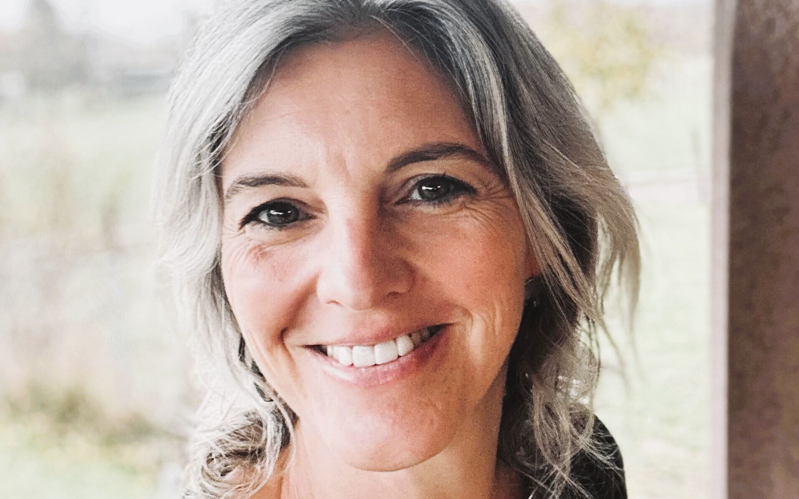
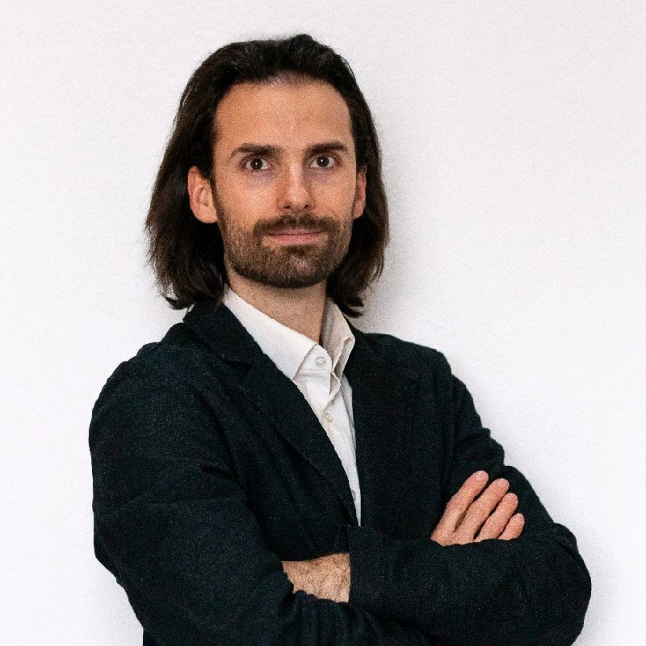

Accueil / L'équipe
Guides de jeûne, accompagnants de randonnée et thérapeutes, présents du premier au dernier jour.

Jurassienne, maman de deux adolescents. Guide de jeûne et de randonnée diplômée (SA1), titulaire d'un diplôme en nutrition et détox. Elle gère l'accueil et la maison de vacances des Franches-Montagnes.
« C'est avec passion que je vous guide vers cette belle aventure qu'est le jeûne. »

Diplômé de l'École Supérieure de Naturopathie de Lausanne (EPSN), il pratique à St-Ursanne, dans le Jura. A rejoint l'équipe au printemps 2025.
Et aussi : Hélène, Pascal, Valérie, Renée, Monique, Marjorie, Matthieu et Mildred, thérapeutes et intervenants présents sur les séjours. La présentation de chacun arrive bientôt.